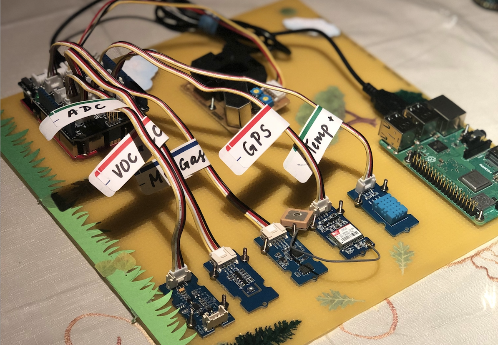
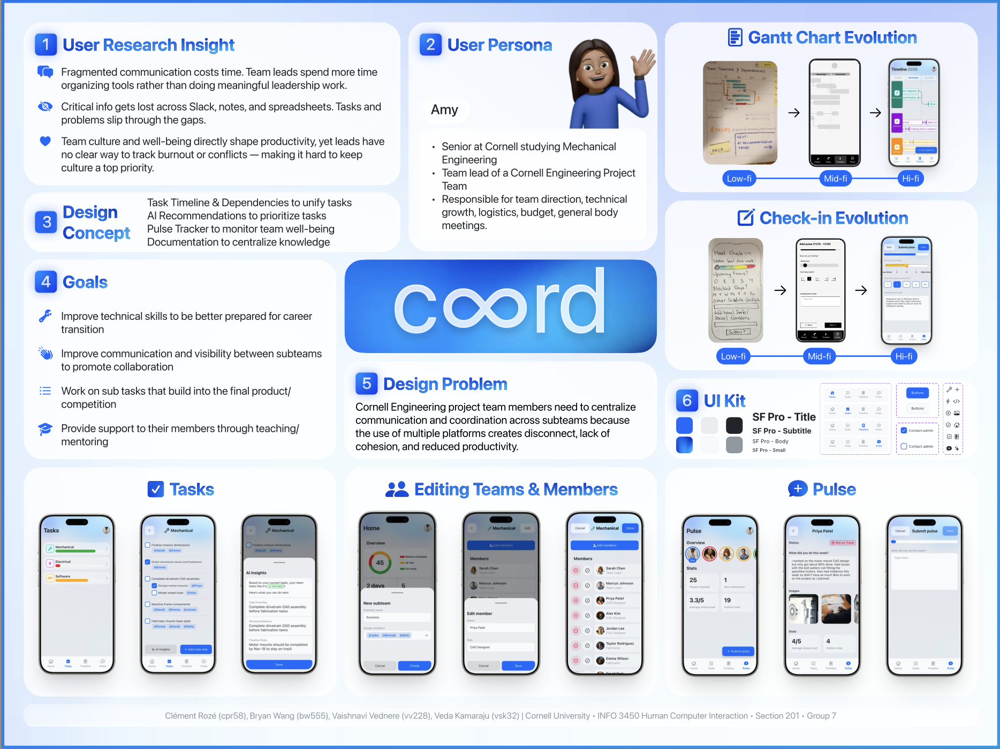
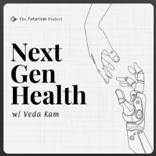
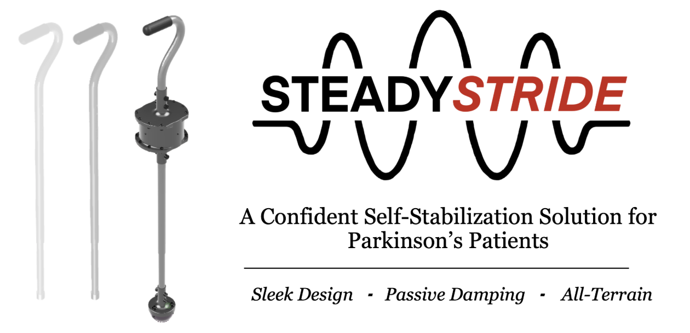
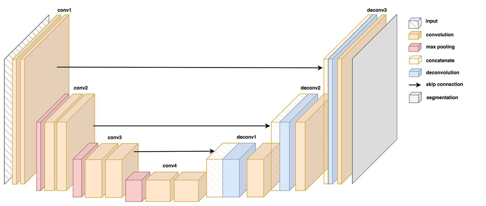

Spatial Co-Expression Prediction (MHCA)
Thesis project in the De Vlaminck Lab: a Borzoi-based cross-attention model predicting spatial gene co-expression across mouse embryo development, achieving R≈0.674 within-chunk and R≈0.548 zero-shot generalization.

De Vlaminck Lab — Cornell BME
Analyzed spatial transcriptomics data from human liver carcinoma samples to identify epigenetic and spatial gene expression patterns, contributing to bioinformatics pipeline development alongside PhD researchers.

Sabuncu Lab — Cornell Tech & Weill Cornell Medicine
Researched gaps between AI model development and real-world clinical deployment in radiology workflows with Professor Mert Sabuncu, including interviews with practicing neuroradiologists and ordinal regression models for Alzheimer's diagnosis and prognosis.

Wyss Institute — Harvard University
Developed and evaluated graph-based learning pipelines for biological data, including probabilistic drug–gene networks for drug repurposing, under a DoD-funded program. Presented findings at the 2025 Cellular and Molecular Bioengineering Conference.

Independent Research
Self-directed projects spanning a mobile air-quality sensing platform (Arduino + Raspberry Pi, regression-based AQI trend analysis), a cloud-based bioinformatics pipeline for kidney disease microRNA biomarker discovery (AWS, Bowtie, SAMtools, GATK), and an early hands-on CNN project classifying skin lesions with DenseNet-121.

Coord — Product Design
End-to-end product design for a collaborative workspace centralizing coordination for Cornell Engineering project teams, grounded in user research and iterative Figma prototyping.

NextGenHealth — Podcast
Host of NextGenHealth, part of The Futurism Project: conversations with clinicians, engineers, students, founders, and thought leaders building toward an interoperable health tech ecosystem.

SteadyStride — DEBUT Team Lead
Led a 70-member cross-functional team to design and clinically evaluate SteadyStride, a self-stabilizing cane for Parkinson's disease — from simulation and IRB-approved trials to patent filing and 1st Place at the Medtronic Design Competition.

Glioma Segmentation — Safety-Focused Design
ML system for glioma segmentation using a retrieval-based approach for medical summary generation rather than a generative one, to avoid hallucination risk in clinical outputs. Co-authored with Antonio Garces.

RAG Audio Assistant
End-to-end audio retrieval-augmented generation pipeline — transcribes speech, embeds and retrieves context, generates a response, and speaks it back via text-to-speech.

Stealth Health Tech
Ongoing research and engineering project benchmarking and evaluating AI systems in healthcare workflows, focused on agent reliability, failure modes, and observability in high-stakes clinical settings. Currently private.